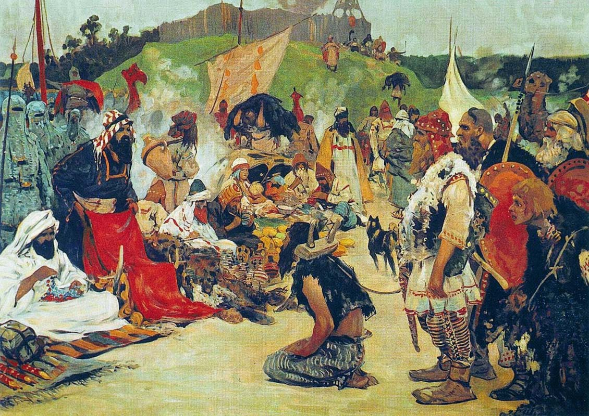
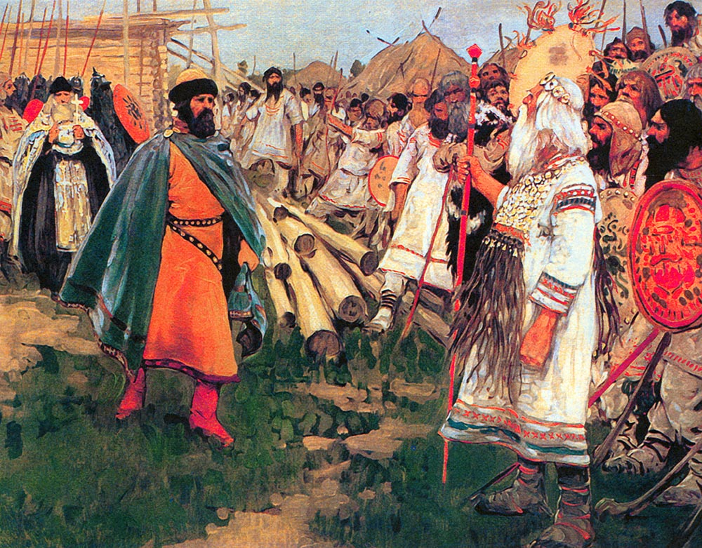
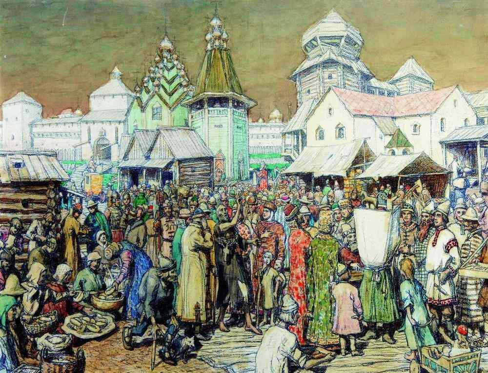
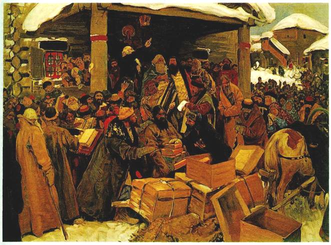
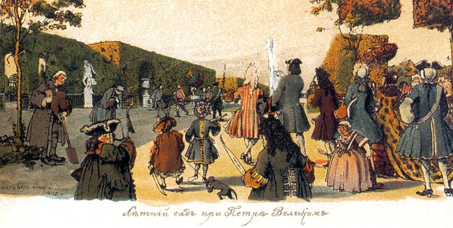

Хронология История России через призму изобразительно исскуства
Подгруппа 5 истории УрФУ
Эпока Древней Руси (IX - XIII)
С. В. Иванов. «Жилье восточных славян» — 1912.

С. В. Иванов. «Торг в стране восточных славян» — 1912.
В. М. Васнецов. «Варяги» — 1912

С. В. Иванов. «Христианство и язычество» — 1910
И. Я. Билибин. «Суд во времена Русской Правды» — 1909
А. М. Васнецов. «Вече» — 1909
С. В. Иванов. «Съезд князей» — 1912. Оригинал
Средневековье (XIII - XVII)
С. В. Иванов. «Баскаки» — 1909
А. М. Васнецов. «Двор удельного князя». (XIII—XIV вв.) — 1908
С. В. Иванов. «Великий государь, царь и самодержец всея Руси» — 1908
С. В. Иванов. «Святейший патриарх Московский и всея Руси» — 1909
С. В. Иванов. «Земский собор (XVII в.)» — 1908
С. В. Иванов. «В приказе московских времен» — 1908
С. В. Иванов. «Суд в Московском государстве» — 1909
С. В. Иванов. «Приезд воеводы» — 1909. Оригинал
С. В. Иванов. «Смотр служивых людей. (XVI—XVII вв.)» — 1908
С. В. Иванов. «На сторожевой границе Московского государства» — 1909
С. В. Иванов. «Стрельцы» — 1908
С. В. Иванов. «Юрьев день» — 1909.

А. М. Васнецов. «Площадь в городе московских времен» — 1909.
А. М. Васнецов. «Монастырь в Московской Руси. (XIII—XVII вв.)» — 1908
Б. М. Кустодиев.«Школа в Московской Руси» — 1908

А. М. Васнецов. «В горнице древнерусского дома московских времен (XVI—XVII вв.)» - 1908
С. В. Иванов. «В смутное время» — 1909. Оригинал

С. В. Иванов. «Во времена раскола» — 1909
А. Н. Бенуа. «В Немецкой слободе» — 1912.
Эпоха Петра I
Д. Н. Кардовский. «Солдаты Петра Великого». 1908
Е. Е. Лансере. «Флот Петра Великого» — 1912
Д. Н. Кардовский. «Заседание Сената петровских времен» — 1908
А. Н. Бенуа. «Петербург при Петре Великом» — 1912
Д. Н. Кардовский. «Смотр новиков» — 1912

А. Н. Бенуа. «В Летнем саду при Петре Великом» — 1913
В. А. Серов. «Петр Великий». — 1909. Оригинал — ГТГ
Анна Иоанновна
Д. Н. Кардовский. «Императрица Анна и её двор (1730—1740 гг.)» — 1908
Елизавета Петровна
Е. Е. Лансере. «Цесаревна Елизавета в Преображенских казармах» — 1913
Екатерина II
А. Н. Бенуа. «Выход императрицы Екатерины II» — 1912
А. Н. Бенуа. «Лагерь екатерининских солдат» — 1912
В. Я. Чемберс. «Дворянское собрание в екатерининские времена» — 1913
А. Н. Бенуа. «Утро помещика. (Конец XVIII и начало XIX вв.)» — 1912
Павел I
А. Н. Бенуа. «Вахтпарад при императоре Павле I» — 1908
Алекса́ндр I
Д. Н. Кардовский. «Москва в сентябре 1812 года» — 1913
Д. Н. Кардовский. «Оборона Севастополя» — 1912
Николай I
М. В. Добужинский. «Учение солдат в николаевское время» — 1913
М. В. Добужинский. «Город в николаевское время» — 1908
Б. М. Кустодиев. «В московской гостиной в 40-х годах» — 1913

Д. Н. Кардовский. «Бал в Москве 20-х годов» — 1913
Алексаандр II
Б. М. Кустодиев. «Освобождение крестьян» — 1908.
...